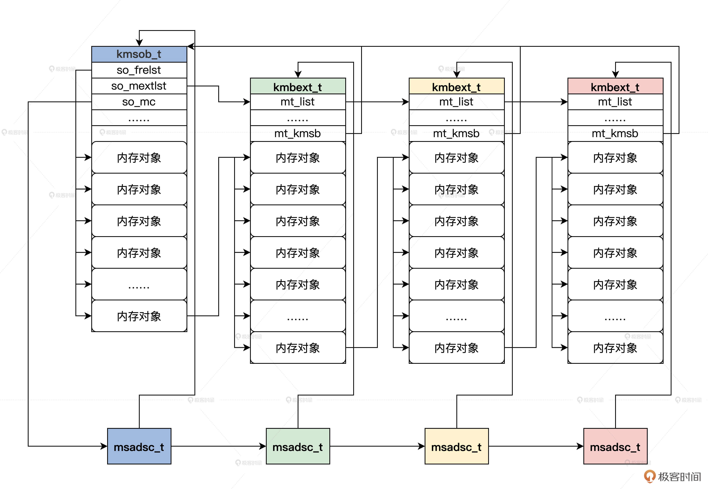

- 00 开篇词 为什么要学写一个操作系统？.md.html
- 00 编辑手记 升级认知，迭代自己的操作系统.md.html
- 01 程序的运行过程：从代码到机器运行.md.html
- 02 几行汇编几行C：实现一个最简单的内核.md.html
- 03 黑盒之中有什么：内核结构与设计.md.html
- 04 震撼的Linux全景图：业界成熟的内核架构长什么样？.md.html
- 05 CPU工作模式：执行程序的三种模式.md.html
- 06 虚幻与真实：程序中的地址如何转换？.md.html
- 07 Cache与内存：程序放在哪儿？.md.html
- 08 锁：并发操作中，解决数据同步的四种方法.md.html
- 09 瞧一瞧Linux：Linux的自旋锁和信号量如何实现？.md.html
- 10 设置工作模式与环境（上）：建立计算机.md.html
- 11 设置工作模式与环境（中）：建造二级引导器.md.html
- 12 设置工作模式与环境（下）：探查和收集信息.md.html
- 13 第一个C函数：如何实现板级初始化？.md.html
- 14 Linux初始化（上）：GRUB与vmlinuz的结构.md.html
- 15 Linux初始化（下）：从_start到第一个进程.md.html
- 16 划分土地（上）：如何划分与组织内存？.md.html
- 17 划分土地（中）：如何实现内存页面初始化？.md.html
- 18 划分土地（下）：如何实现内存页的分配与释放？.md.html
- 19 土地不能浪费：如何管理内存对象？.md.html
- 20 土地需求扩大与保障：如何表示虚拟内存？.md.html
- 21 土地需求扩大与保障：如何分配和释放虚拟内存？.md.html
- 22 瞧一瞧Linux：伙伴系统如何分配内存？.md.html
- 23 瞧一瞧Linux：SLAB如何分配内存？.md.html
- 24 活动的描述：到底什么是进程？.md.html
- 25 多个活动要安排（上）：多进程如何调度？.md.html
- 26 多个活动要安排（下）：如何实现进程的等待与唤醒机制？.md.html
- 27 瞧一瞧Linux：Linux如何实现进程与进程调度_.md.html
- 28 部门分类：如何表示设备类型与设备驱动？.md.html
- 29 部门建立：如何在内核中注册设备？.md.html
- 30 部门响应：设备如何处理内核I_O包？.md.html
- 31 瞧一瞧Linux：如何获取所有设备信息？.md.html
- 32 仓库结构：如何组织文件_.md.html
- 33 仓库划分：文件系统的格式化操作.md.html
- 34 仓库管理：如何实现文件的六大基本操作？.md.html
- 35 瞧一瞧Linux：虚拟文件系统如何管理文件？.md.html
- 36 从URL到网卡：如何全局观察网络数据流动？.md.html
- 37 从内核到应用：网络数据在内核中如何流转.md.html
- 38 从单排到团战：详解操作系统的宏观网络架构.md.html
- 39 瞧一瞧Linux：详解socket实现与网络编程接口.md.html
- 40 瞧一瞧Linux：详解socket的接口实现.md.html
- 41 服务接口：如何搭建沟通桥梁？.md.html
- 42 瞧一瞧Linux：如何实现系统API？.md.html
- 43 虚拟机内核：KVM是什么？.md.html
- 44 容器：如何理解容器的实现机制？.md.html
- 45 ARM新宠：苹果的M1芯片因何而快？.md.html
- 46 AArch64体系：ARM最新编程架构模型剖析.md.html
- LMOS来信：第二季课程带你“手撕”计算机基础.md.html
- 大咖助场 以无法为有法，以无限为有限.md.html
- 用户故事 yiyang：我的上机实验“爬坑指南”.md.html
- 用户故事 成为面向“知识库”的工程师.md.html
- 用户故事 技术人如何做选择，路才越走越宽？.md.html
- 用户故事 操作系统发烧友：看不懂？因为你没动手.md.html
- 用户故事 用好动态调试，助力课程学习.md.html
- 用户故事 艾同学：路虽远，行则将至.md.html
- 结束语 生活可以一地鸡毛，但操作系统却是心中的光.md.html
- 捐赠
19 土地不能浪费：如何管理内存对象？
你好，我是LMOS。
在前面的课程中，我们建立了物理内存页面管理器，它既可以分配单个页面，也可以分配多个连续的页面，还能指定在特殊内存地址区域中分配页面。
但你发现没有，物理内存页面管理器一次分配至少是一个页面，而我们对内存分页是一个页面4KB，即4096字节。对于小于一个页面的内存分配请求，它无能为力。如果要实现小于一个页面的内存分配请求，又该怎么做呢？
这节课我们就一起来解决这个问题。课程配套代码，你可以从这里获得。
malloc给我们的启发
首先，我想和你说说，为什么小于一个页面的内存我们也要格外珍惜？
如果你在大学学过C程序设计语言的话，相信你对C库中的malloc函数也不会陌生，它负责完成分配一块内存空间的功能。
下面的代码。我相信你也写过，或者写过类似的，不用多介绍你也可以明白。
#include <stdio.h>
#include <string.h>
#include <stdlib.h>
int main() {
char *str;
//内存分配 存放15个char字符类型
str = (char *) malloc(15);
if (str == NULL) {
printf("mem alloc err\n");
return -1;
}
//把hello world字符串复制到str开始的内存地址空间中
strcpy(str, "hello world");
//打印hello world字符串和它的地址
printf("String = %s, Address = %u\n", str, str);
//释放分配的内存
free(str);
return(0);
}
这个代码流程很简单，就是分配一块15字节大小的内存空间，然后把字符串复制到分配的内存空间中，最后用字符串的形式打印了那个块内存，最后释放该内存空间。
但我们并不是要了解malloc、free函数的工作原理，而是要清楚，像这样分配几个字节内存空间的操作，这在内核中比比皆是。
页还能细分吗
是的，单从内存角度来看，页最小是以字节为单位的。但是从MMU角度看，内存是以页为单位的，所以我们的Cosmos的物理内存分配器也以页为单位。现在的问题是，内核中有大量远小于一个页面的内存分配请求，如果对此还是分配一个页面，就会浪费内存。
要想解决这个问题，就要细分“页”这个单位。虽然从MMU角度来看，页不能细分，但是从软件逻辑层面页可以细分，但是如何分，则十分讲究。
结合历史经验和硬件特性（Cache行大小）来看，我们可以把一个页面或者连续的多个页面，分成32字节、64字节、128字节、256字节、512字节、1024字节、2048字节、4096字节（一个页）。这些都是Cache行大小的倍数。我们给这些小块内存取个名字，叫内存对象。
我们可以这样设计：把一个或者多个内存页面分配出来，作为一个内存对象的容器，在这个容器中容纳相同的内存对象，即同等大小的内存块。你可以把这个容器，想像成一个内存对象数组。为了让你更好理解，我还给你画了张图解释。

如何表示一个内存对象
前面只是进行了理论上的设计和构想，下面我们就通过代码来实现这些构想，真正把想法变成现实。
我们从内存对象开始入手。如何表示一个内存对象呢？当然是要设计一个表示内存对象的数据结构，代码如下所示：
typedef struct s_FREOBJH
{
list_h_t oh_list; //链表
uint_t oh_stus; //对象状态
void* oh_stat; //对象的开始地址
}freobjh_t;
我们在后面的代码中就用freobjh_t结构表示一个对象，其中的链表是为了找到这个对象。是不是很简单？没错，表示一个内存对象就是如此简单。
内存对象容器
光有内存对象还不够，如何放置内存对象是很重要的。根据前面的构想，为了把多个同等大小的内存对象放在一个内存对象容器中，我们需要设计出表示内存对象容器的数据结构。内存容器要占用内存页面，需要内存对象计数信息、内存对象大小信息，还要能扩展容量。
把上述功能综合起来，代码如下所示。
//管理内存对象容器占用的内存页面所对应的msadsc_t结构
typedef struct s_MSCLST
{
uint_t ml_msanr; //多少个msadsc_t
uint_t ml_ompnr; //一个msadsc_t对应的连续的物理内存页面数
list_h_t ml_list; //挂载msadsc_t的链表
}msclst_t;
//管理内存对象容器占用的内存
typedef struct s_MSOMDC
{
//msclst_t结构数组mc_lst[0]=1个连续页面的msadsc_t
// mc_lst[1]=2个连续页面的msadsc_t
// mc_lst[2]=4个连续页面的msadsc_t
// mc_lst[3]=8个连续页面的msadsc_t
// mc_lst[4]=16个连续页面的msadsc_t
msclst_t mc_lst[MSCLST_MAX];
uint_t mc_msanr; //总共多个msadsc_t结构
list_h_t mc_list;
//内存对象容器第一个占用msadsc_t
list_h_t mc_kmobinlst;
//内存对象容器第一个占用msadsc_t对应的连续的物理内存页面数
uint_t mc_kmobinpnr;
}msomdc_t;
//管理内存对象容器扩展容量
typedef struct s_KMBEXT
{
list_h_t mt_list; //链表
adr_t mt_vstat; //内存对象容器扩展容量开始地址
adr_t mt_vend; //内存对象容器扩展容量结束地址
kmsob_t* mt_kmsb; //指向内存对象容器结构
uint_t mt_mobjnr; //内存对象容器扩展容量的内存中有多少对象
}kmbext_t;
//内存对象容器
typedef struct s_KMSOB
{
list_h_t so_list; //链表
spinlock_t so_lock; //保护结构自身的自旋锁
uint_t so_stus; //状态与标志
uint_t so_flgs;
adr_t so_vstat; //内存对象容器的开始地址
adr_t so_vend; //内存对象容器的结束地址
size_t so_objsz; //内存对象大小
size_t so_objrelsz; //内存对象实际大小
uint_t so_mobjnr; //内存对象容器中总共的对象个数
uint_t so_fobjnr; //内存对象容器中空闲的对象个数
list_h_t so_frelst; //内存对象容器中空闲的对象链表头
list_h_t so_alclst; //内存对象容器中分配的对象链表头
list_h_t so_mextlst; //内存对象容器扩展kmbext_t结构链表头
uint_t so_mextnr; //内存对象容器扩展kmbext_t结构个数
msomdc_t so_mc; //内存对象容器占用内存页面管理结构
void* so_privp; //本结构私有数据指针
void* so_extdp; //本结构扩展数据指针
}kmsob_t;
这段代码中设计了四个数据结构：kmsob_t用于表示内存对象容器，kmbext_t用于表示内存对象容器的扩展内存，msomdc_t和msclst_t用于管理内存对象容器占用的物理内存页面。
你可能很难理解它们之间的关系，所以我为你准备了一幅图，如下所示。

结合图示我们可以发现，在一组连续物理内存页面（用来存放内存对象）的开始地址那里，就存放着我们kmsob_t和kmbext_t的实例变量，它们占用了几十字节的空间。
初始化
因为kmsob_t、kmbext_t、freobjh_t结构的实例变量，它们是建立内存对象容器时创建并初始化的，这个过程是伴随着分配内存对象而进行的，所以内存对象管理器的初始化很简单。
但是有一点还是要初始化的，那就是管理kmsob_t结构的数据结构，它用于挂载不同大小的内存容器。现在我们就在cosmos/hal/x86/目录下建立一个kmsob.c文件，来实现这个数据结构并初始化，代码如下所示。
#define KOBLST_MAX (64)
//挂载kmsob_t结构
typedef struct s_KOBLST
{
list_h_t ol_emplst; //挂载kmsob_t结构的链表
kmsob_t* ol_cahe; //最近一次查找的kmsob_t结构
uint_t ol_emnr; //挂载kmsob_t结构的数量
size_t ol_sz; //kmsob_t结构中内存对象的大小
}koblst_t;
//管理kmsob_t结构的数据结构
typedef struct s_KMSOBMGRHED
{
spinlock_t ks_lock; //保护自身的自旋锁
list_h_t ks_tclst; //链表
uint_t ks_tcnr;
uint_t ks_msobnr; //总共多少个kmsob_t结构
kmsob_t* ks_msobche; //最近分配内存对象的kmsob_t结构
koblst_t ks_msoblst[KOBLST_MAX]; //koblst_t结构数组
}kmsobmgrhed_t;
//初始化koblst_t结构体
void koblst_t_init(koblst_t *initp, size_t koblsz)
{
list_init(&initp->ol_emplst);
initp->ol_cahe = NULL;
initp->ol_emnr = 0;
initp->ol_sz = koblsz;
return;
}
//初始化kmsobmgrhed_t结构体
void kmsobmgrhed_t_init(kmsobmgrhed_t *initp)
{
size_t koblsz = 32;
knl_spinlock_init(&initp->ks_lock);
list_init(&initp->ks_tclst);
initp->ks_tcnr = 0;
initp->ks_msobnr = 0;
initp->ks_msobche = NULL;
for (uint_t i = 0; i < KOBLST_MAX; i++)
{
koblst_t_init(&initp->ks_msoblst[i], koblsz);
koblsz += 32;//这里并不是按照开始的图形分类的而是每次增加32字节，所以是32，64,96,128,160,192,224，256，.......
}
return;
}
//初始化kmsob
void init_kmsob()
{
kmsobmgrhed_t_init(&memmgrob.mo_kmsobmgr);
return;
}
上面的代码注释已经很清楚了，就是init_kmsob函数调用kmsobmgrhed_t_init函数，在其中循环初始化koblst_t结构体数组，不多做解释。
但是有一点我们要搞清楚：kmsobmgrhed_t结构的实例变量是放在哪里的，它其实放在我们之前的memmgrob_t结构中了，代码如下所示。
//cosmos/include/halinc/halglobal.c
HAL_DEFGLOB_VARIABLE(memmgrob_t,memmgrob);
typedef struct s_MEMMGROB
{
list_h_t mo_list;
spinlock_t mo_lock;
uint_t mo_stus;
uint_t mo_flgs;
//略去很多字段
//管理kmsob_t结构的数据结构
kmsobmgrhed_t mo_kmsobmgr;
void* mo_privp;
void* mo_extp;
}memmgrob_t;
//cosmos/hal/x86/memmgrinit.c
void init_memmgr()
{
//初始化内存页结构
init_msadsc();
//初始化内存区结构
init_memarea();
//处理内存占用
init_search_krloccupymm(&kmachbsp);
//合并内存页到内存区中
init_memmgrob();
//初始化kmsob
init_kmsob();
return;
}
这并没有那么难，是不是？到这里，我们在内存管理初始化init_memmgr函数中调用了init_kmsob函数，对管理内存对象容器的结构进行了初始化，这样后面我们就能分配内存对象了。
分配内存对象
根据前面的初始化过程，我们只是初始化了kmsobmgrhed_t结构，却没初始化任何kmsob_t结构，而这个结构就是存放内存对象的容器，没有它是不能进行任何分配内存对象的操作的。
下面我们一起在分配内存对象的过程中探索，应该如何查找、建立kmsob_t结构，然后在kmsob_t结构中建立freobjh_t结构，最后在内存对象容器的容量不足时，一起来扩展容器的内存。
分配内存对象的接口
分配内存对象的流程，仍然要从分配接口开始。分配内存对象的接口很简单，只有一个内存对象大小的参数，然后返回内存对象的首地址。下面我们先在kmsob.c文件中写好这个函数，代码如下所示。
//分配内存对象的核心函数
void *kmsob_new_core(size_t msz)
{
//获取kmsobmgrhed_t结构的地址
kmsobmgrhed_t *kmobmgrp = &memmgrob.mo_kmsobmgr;
void *retptr = NULL;
koblst_t *koblp = NULL;
kmsob_t *kmsp = NULL;
cpuflg_t cpuflg;
//对kmsobmgrhed_t结构加锁
knl_spinlock_cli(&kmobmgrp->ks_lock, &cpuflg);
koblp = onmsz_retn_koblst(kmobmgrp, msz);
if (NULL == koblp)
{
retptr = NULL;
goto ret_step;
}
kmsp = onkoblst_retn_newkmsob(koblp, msz);
if (NULL == kmsp)
{
kmsp = _create_kmsob(kmobmgrp, koblp, koblp->ol_sz);
if (NULL == kmsp)
{
retptr = NULL;
goto ret_step;
}
}
retptr = kmsob_new_onkmsob(kmsp, msz);
if (NULL == retptr)
{
retptr = NULL;
goto ret_step;
}
//更新kmsobmgrhed_t结构的信息
kmsob_updata_cache(kmobmgrp, koblp, kmsp, KUC_NEWFLG);
ret_step:
//解锁kmsobmgrhed_t结构
knl_spinunlock_sti(&kmobmgrp->ks_lock, &cpuflg);
return retptr;
}
//内存对象分配接口
void *kmsob_new(size_t msz)
{
//对于小于1 或者 大于2048字节的大小不支持 直接返回NULL表示失败
if (1 > msz || 2048 < msz)
{
return NULL;
}
//调用核心函数
return kmsob_new_core(msz);
}
上面代码中，内存对象分配接口很简单，只是对分配内存对象的大小进行检查，然后调用分配内存对象的核心函数，在这个核心函数中，就是围绕我们之前定义的几个数据结构，去进行一系列操作了。
但是究竟做了哪些操作呢，别急，我们继续往下看。
查找内存对象容器
根据前面的设计，我们已经知道内存对象是放在内存对象容器中的，所以要分配内存对象，必须要先根据要分配的内存对象大小，找到内存对象容器。
同时，我们还知道，内存对象容器数据结构kmsob_t就挂载在kmsobmgrhed_t数据结构中的ks_msoblst数组中，所以我们要遍历ks_msoblst数组，我们来写一个onmsz_retn_koblst函数，它返回ks_msoblst数组元素的指针，表示先根据内存对象的大小找到挂载kmsob_t结构对应的koblst_t结构。
//看看内存对象容器是不是合乎要求
kmsob_t *scan_newkmsob_isok(kmsob_t *kmsp, size_t msz)
{
//只要内存对象大小小于等于内存对象容器的对象大小就行
if (msz <= kmsp->so_objsz)
{
return kmsp;
}
return NULL;
}
koblst_t *onmsz_retn_koblst(kmsobmgrhed_t *kmmgrhlokp, size_t msz)
{
//遍历ks_msoblst数组
for (uint_t kli = 0; kli < KOBLST_MAX; kli++)
{
//只要大小合适就返回
if (kmmgrhlokp->ks_msoblst[kli].ol_sz >= msz)
{
return &kmmgrhlokp->ks_msoblst[kli];
}
}
return NULL;
}
kmsob_t *onkoblst_retn_newkmsob(koblst_t *koblp, size_t msz)
{
kmsob_t *kmsp = NULL, *tkmsp = NULL;
list_h_t *tmplst = NULL;
//先看看上次分配所用到的koblst_t是不是正好是这次需要的
kmsp = scan_newkmsob_isok(koblp->ol_cahe, msz);
if (NULL != kmsp)
{
return kmsp;
}
//如果koblst_t中挂载的kmsob_t大于0
if (0 < koblp->ol_emnr)
{
//开始遍历koblst_t中挂载的kmsob_t
list_for_each(tmplst, &koblp->ol_emplst)
{
tkmsp = list_entry(tmplst, kmsob_t, so_list);
//检查当前kmsob_t是否合乎要求
kmsp = scan_newkmsob_isok(tkmsp, msz);
if (NULL != kmsp)
{
return kmsp;
}
}
}
return NULL;
}
上述代码非常好理解，就是通过onmsz_retn_koblst函数，它根据内存对象大小查找并返回ks_msoblst数组元素的指针，这个数组元素中就挂载着相应的内存对象容器，然后由onkoblst_retn_newkmsob函数查询其中的内存对象容器并返回。
建立内存对象容器
不知道你发现没有，有一种情况必然会发生，那就是第一次分配内存对象时调用onkoblst_retn_newkmsob函数，它肯定会返回一个NULL。因为第一次分配时肯定没有kmsob_t结构，所以我们在这个时候建立一个kmsob_t结构，即建立内存对象容器。
下面我们写一个_create_kmsob函数来创建kmsob_t结构，并执行一些初始化工作，代码如下所示。
//初始化内存对象数据结构
void freobjh_t_init(freobjh_t *initp, uint_t stus, void *stat)
{
list_init(&initp->oh_list);
initp->oh_stus = stus;
initp->oh_stat = stat;
return;
}
//初始化内存对象容器数据结构
void kmsob_t_init(kmsob_t *initp)
{
list_init(&initp->so_list);
knl_spinlock_init(&initp->so_lock);
initp->so_stus = 0;
initp->so_flgs = 0;
initp->so_vstat = NULL;
initp->so_vend = NULL;
initp->so_objsz = 0;
initp->so_objrelsz = 0;
initp->so_mobjnr = 0;
initp->so_fobjnr = 0;
list_init(&initp->so_frelst);
list_init(&initp->so_alclst);
list_init(&initp->so_mextlst);
initp->so_mextnr = 0;
msomdc_t_init(&initp->so_mc);
initp->so_privp = NULL;
initp->so_extdp = NULL;
return;
}
//把内存对象容器数据结构，挂载到对应的koblst_t结构中去
bool_t kmsob_add_koblst(koblst_t *koblp, kmsob_t *kmsp)
{
list_add(&kmsp->so_list, &koblp->ol_emplst);
koblp->ol_emnr++;
return TRUE;
}
//初始化内存对象容器
kmsob_t *_create_init_kmsob(kmsob_t *kmsp, size_t objsz, adr_t cvadrs, adr_t cvadre, msadsc_t *msa, uint_t relpnr)
{
//初始化kmsob结构体
kmsob_t_init(kmsp);
//设置内存对象容器的开始、结束地址，内存对象大小
kmsp->so_vstat = cvadrs;
kmsp->so_vend = cvadre;
kmsp->so_objsz = objsz;
//把物理内存页面对应的msadsc_t结构加入到kmsob_t中的so_mc.mc_kmobinlst链表上
list_add(&msa->md_list, &kmsp->so_mc.mc_kmobinlst);
kmsp->so_mc.mc_kmobinpnr = (uint_t)relpnr;
//设置内存对象的开始地址为kmsob_t结构之后，结束地址为内存对象容器的结束地址
freobjh_t *fohstat = (freobjh_t *)(kmsp + 1), *fohend = (freobjh_t *)cvadre;
uint_t ap = (uint_t)((uint_t)fohstat);
freobjh_t *tmpfoh = (freobjh_t *)((uint_t)ap);
for (; tmpfoh < fohend;)
{//相当在kmsob_t结构体之后建立一个freobjh_t结构体数组
if ((ap + (uint_t)kmsp->so_objsz) <= (uint_t)cvadre)
{//初始化每个freobjh_t结构体
freobjh_t_init(tmpfoh, 0, (void *)tmpfoh);
//把每个freobjh_t结构体加入到kmsob_t结构体中的so_frelst中
list_add(&tmpfoh->oh_list, &kmsp->so_frelst);
kmsp->so_mobjnr++;
kmsp->so_fobjnr++;
}
ap += (uint_t)kmsp->so_objsz;
tmpfoh = (freobjh_t *)((uint_t)ap);
}
return kmsp;
}
//建立一个内存对象容器
kmsob_t *_create_kmsob(kmsobmgrhed_t *kmmgrlokp, koblst_t *koblp, size_t objsz)
{
kmsob_t *kmsp = NULL;
msadsc_t *msa = NULL;
uint_t relpnr = 0;
uint_t pages = 1;
if (128 < objsz)
{
pages = 2;
}
if (512 < objsz)
{
pages = 4;
}
//为内存对象容器分配物理内存空间，这是我们之前实现的物理内存页面管理器
msa = mm_division_pages(&memmgrob, pages, &relpnr, MA_TYPE_KRNL, DMF_RELDIV);
if (NULL == msa)
{
return NULL;
}
u64_t phyadr = msa->md_phyadrs.paf_padrs << PSHRSIZE;
u64_t phyade = phyadr + (relpnr << PSHRSIZE) - 1;
//计算它们的虚拟地址
adr_t vadrs = phyadr_to_viradr((adr_t)phyadr);
adr_t vadre = phyadr_to_viradr((adr_t)phyade);
//初始化kmsob_t并建立内存对象
kmsp = _create_init_kmsob((kmsob_t *)vadrs, koblp->ol_sz, vadrs, vadre, msa, relpnr);
//把kmsob_t结构，挂载到对应的koblst_t结构中去
if (kmsob_add_koblst(koblp, kmsp) == FALSE)
{
system_error(" _create_kmsob kmsob_add_koblst FALSE\n");
}
//增加计数
kmmgrlokp->ks_msobnr++;
return kmsp;
_create_kmsob函数就是根据分配内存对象大小，建立一个内存对象容器。
首先，这个函数会找物理内存页面管理器申请一块连续内存页面。然后，在其中的开始部分建立kmsob_t结构的实例变量，又在kmsob_t结构的后面建立freobjh_t结构数组，并把每个freobjh_t结构挂载到kmsob_t结构体中的so_frelst中。最后再把kmsob_t结构，挂载到kmsobmgrhed_t结构对应的koblst_t结构中去。
上面的注释已经很清楚了，我相信你看得懂。
扩容内存对象容器
如果我们不断重复分配同一大小的内存对象，那么那个内存对象容器中的内存对象，迟早要分配完的。一旦内存对象分配完，内存对象容器就没有空闲的内存空间产生内存对象了。这时，我们就要为内存对象容器扩展内存空间了。
下面我们来写代码实现，如下所示。
//初始化kmbext_t结构
void kmbext_t_init(kmbext_t *initp, adr_t vstat, adr_t vend, kmsob_t *kmsp)
{
list_init(&initp->mt_list);
initp->mt_vstat = vstat;
initp->mt_vend = vend;
initp->mt_kmsb = kmsp;
initp->mt_mobjnr = 0;
return;
}
//扩展内存页面
bool_t kmsob_extn_pages(kmsob_t *kmsp)
{
msadsc_t *msa = NULL;
uint_t relpnr = 0;
uint_t pages = 1;
if (128 < kmsp->so_objsz)
{
pages = 2;
}
if (512 < kmsp->so_objsz)
{
pages = 4;
}
//找物理内存页面管理器分配2或者4个连续的页面
msa = mm_division_pages(&memmgrob, pages, &relpnr, MA_TYPE_KRNL, DMF_RELDIV);
if (NULL == msa)
{
return FALSE;
}
u64_t phyadr = msa->md_phyadrs.paf_padrs << PSHRSIZE;
u64_t phyade = phyadr + (relpnr << PSHRSIZE) - 1;
adr_t vadrs = phyadr_to_viradr((adr_t)phyadr);
adr_t vadre = phyadr_to_viradr((adr_t)phyade);
//求出物理内存页面数对应在kmsob_t的so_mc.mc_lst数组中下标
sint_t mscidx = retn_mscidx(relpnr);
//把物理内存页面对应的msadsc_t结构加入到kmsob_t的so_mc.mc_lst数组中
list_add(&msa->md_list, &kmsp->so_mc.mc_lst[mscidx].ml_list);
kmsp->so_mc.mc_lst[mscidx].ml_msanr++;
kmbext_t *bextp = (kmbext_t *)vadrs;
//初始化kmbext_t数据结构
kmbext_t_init(bextp, vadrs, vadre, kmsp);
//设置内存对象的开始地址为kmbext_t结构之后，结束地址为扩展内存页面的结束地址
freobjh_t *fohstat = (freobjh_t *)(bextp + 1), *fohend = (freobjh_t *)vadre;
uint_t ap = (uint_t)((uint_t)fohstat);
freobjh_t *tmpfoh = (freobjh_t *)((uint_t)ap);
for (; tmpfoh < fohend;)
{
if ((ap + (uint_t)kmsp->so_objsz) <= (uint_t)vadre)
{//在扩展的内存空间中建立内存对象
freobjh_t_init(tmpfoh, 0, (void *)tmpfoh);
list_add(&tmpfoh->oh_list, &kmsp->so_frelst);
kmsp->so_mobjnr++;
kmsp->so_fobjnr++;
bextp->mt_mobjnr++;
}
ap += (uint_t)kmsp->so_objsz;
tmpfoh = (freobjh_t *)((uint_t)ap);
}
list_add(&bextp->mt_list, &kmsp->so_mextlst);
kmsp->so_mextnr++;
return TRUE;
}
有了前面建立内存对象容器的经验，加上这里的注释，我们理解上述代码并不难：不过是分配了另一块连续的内存空间，作为空闲的内存对象，并且把这块内存空间加内存对象容器中统一管理。
分配内存对象
有了内存对象容器，就可以分配内存对象了。由于我们前面精心设计了内存对象容器、内存对象等数据结构，这使得我们的内存对象分配代码时极其简单，而且性能极高。
下面我们来实现它吧！代码如下所示。
//判断内存对象容器中有没有内存对象
uint_t scan_kmob_objnr(kmsob_t *kmsp)
{
if (0 < kmsp->so_fobjnr)
{
return kmsp->so_fobjnr;
}
return 0;
}
//实际分配内存对象
void *kmsob_new_opkmsob(kmsob_t *kmsp, size_t msz)
{
//获取kmsob_t中的so_frelst链表头的第一个空闲内存对象
freobjh_t *fobh = list_entry(kmsp->so_frelst.next, freobjh_t, oh_list);
//从链表中脱链
list_del(&fobh->oh_list);
//kmsob_t中的空闲对象计数减一
kmsp->so_fobjnr--;
//返回内存对象首地址
return (void *)(fobh);
}
void *kmsob_new_onkmsob(kmsob_t *kmsp, size_t msz)
{
void *retptr = NULL;
cpuflg_t cpuflg;
knl_spinlock_cli(&kmsp->so_lock, &cpuflg);
//如果内存对象容器中没有空闲的内存对象了就需要扩展内存对象容器的内存了
if (scan_kmsob_objnr(kmsp) < 1)
{//扩展内存对象容器的内存
if (kmsob_extn_pages(kmsp) == FALSE)
{
retptr = NULL;
goto ret_step;
}
}
//实际分配内存对象
retptr = kmsob_new_opkmsob(kmsp, msz);
ret_step:
knl_spinunlock_sti(&kmsp->so_lock, &cpuflg);
return retptr;
}
分配内存对象的核心操作就是，kmsob_new_opkmsob函数从空闲内存对象链表头中取出第一个内存对象，返回它的首地址。这个算法非常高效，无论内存对象容器中的内存对象有多少，kmsob_new_opkmsob函数的操作始终是固定的，而如此高效的算法得益于我们先进的数据结构设计。
好了，到这里内存对象的分配就已经完成了，下面我们去实现内存对象的释放。
释放内存对象
释放内存对象，就是要把内存对象还给它所归属的内存对象容器。其逻辑就是根据释放内存对象的地址和大小，找到对应的内存对象容器，然后把该内存对象加入到对应内存对象容器的空闲链表上，最后看一看要不要释放内存对象容器占用的物理内存页面。
释放内存对象的接口
这里我们依然要从释放内存对象的接口开始实现，下面我们在kmsob.c文中写下这个函数，代码如下所示。
bool_t kmsob_delete_core(void *fadrs, size_t fsz)
{
kmsobmgrhed_t *kmobmgrp = &memmgrob.mo_kmsobmgr;
bool_t rets = FALSE;
koblst_t *koblp = NULL;
kmsob_t *kmsp = NULL;
cpuflg_t cpuflg;
knl_spinlock_cli(&kmobmgrp->ks_lock, &cpuflg);
//根据释放内存对象的大小在kmsobmgrhed_t中查找并返回koblst_t，在其中挂载着对应的kmsob_t，这个在前面已经写好了
koblp = onmsz_retn_koblst(kmobmgrp, fsz);
if (NULL == koblp)
{
rets = FALSE;
goto ret_step;
}
kmsp = onkoblst_retn_delkmsob(koblp, fadrs, fsz);
if (NULL == kmsp)
{
rets = FALSE;
goto ret_step;
}
rets = kmsob_delete_onkmsob(kmsp, fadrs, fsz);
if (FALSE == rets)
{
rets = FALSE;
goto ret_step;
}
if (_destroy_kmsob(kmobmgrp, koblp, kmsp) == FALSE)
{
rets = FALSE;
goto ret_step;
}
rets = TRUE;
ret_step:
knl_spinunlock_sti(&kmobmgrp->ks_lock, &cpuflg);
return rets;
}
//释放内存对象接口
bool_t kmsob_delete(void *fadrs, size_t fsz)
{
//对参数进行检查，但是多了对内存对象地址的检查
if (NULL == fadrs || 1 > fsz || 2048 < fsz)
{
return FALSE;
}
//调用释放内存对象的核心函数
return kmsob_delete_core(fadrs, fsz);
}
上述代码中，等到kmsob_delete函数检查参数通过之后，就调用释放内存对象的核心函数kmsob_delete_core，在这个函数中，一开始根据释放内存对象大小，找到挂载其kmsob_t结构的koblst_t结构，接着又做了一系列的操作，这些操作正是我们接下来要实现的。
查找内存对象容器
释放内存对象，首先要找到这个将要释放的内存对象所属的内存对象容器。释放时的查找和分配时的查找不一样，因为要检查释放的内存对象是不是属于该内存对象容器。
下面我们一起来实现这个函数，代码如下所示。
//检查释放的内存对象是不是在kmsob_t结构中
kmsob_t *scan_delkmsob_isok(kmsob_t *kmsp, void *fadrs, size_t fsz)
{//检查释放内存对象的地址是否落在kmsob_t结构的地址区间
if ((adr_t)fadrs >= (kmsp->so_vstat + sizeof(kmsob_t)) && ((adr_t)fadrs + (adr_t)fsz) <= kmsp->so_vend)
{ //检查释放内存对象的大小是否小于等于kmsob_t内存对象容器的对象大小
if (fsz <= kmsp->so_objsz)
{
return kmsp;
}
}
if (1 > kmsp->so_mextnr)
{//如果kmsob_t结构没有扩展空间，直接返回
return NULL;
}
kmbext_t *bexp = NULL;
list_h_t *tmplst = NULL;
//遍历kmsob_t结构中的每个扩展空间
list_for_each(tmplst, &kmsp->so_mextlst)
{
bexp = list_entry(tmplst, kmbext_t, mt_list);
//检查释放内存对象的地址是否落在扩展空间的地址区间
if ((adr_t)fadrs >= (bexp->mt_vstat + sizeof(kmbext_t)) && ((adr_t)fadrs + (adr_t)fsz) <= bexp->mt_vend)
{//同样的要检查大小
if (fsz <= kmsp->so_objsz)
{
return kmsp;
}
}
}
return NULL;
}
//查找释放内存对象所属的kmsob_t结构
kmsob_t *onkoblst_retn_delkmsob(koblst_t *koblp, void *fadrs, size_t fsz)
{
v *kmsp = NULL, *tkmsp = NULL;
list_h_t *tmplst = NULL;
//看看上次刚刚操作的kmsob_t结构
kmsp = scan_delkmsob_isok(koblp->ol_cahe, fadrs, fsz);
if (NULL != kmsp)
{
return kmsp;
}
if (0 < koblp->ol_emnr)
{ //遍历挂载koblp->ol_emplst链表上的每个kmsob_t结构
list_for_each(tmplst, &koblp->ol_emplst)
{
tkmsp = list_entry(tmplst, kmsob_t, so_list);
//检查释放的内存对象是不是属于这个kmsob_t结构
kmsp = scan_delkmsob_isok(tkmsp, fadrs, fsz);
if (NULL != kmsp)
{
return kmsp;
}
}
}
return NULL;
}
上面的代码注释已经很明白了，搜索对应koblst_t结构中的每个kmsob_t结构体，随后进行检查，检查了kmsob_t结构的自身内存区域和扩展内存区域。即比较释放内存对象的地址是不是落在它们的内存区间中，其大小是否合乎要求。
释放内存对象
如果不出意外，会找到释放内存对象的kmsob_t结构，这样就可以释放内存对象了，就是把这块内存空间还给内存对象容器，这个过程的具体代码实现如下所示。
bool_t kmsob_del_opkmsob(kmsob_t *kmsp, void *fadrs, size_t fsz)
{
if ((kmsp->so_fobjnr + 1) > kmsp->so_mobjnr)
{
return FALSE;
}
//让freobjh_t结构重新指向要释放的内存空间
freobjh_t *obhp = (freobjh_t *)fadrs;
//重新初始化块内存空间
freobjh_t_init(obhp, 0, obhp);
//加入kmsob_t结构的空闲链表
list_add(&obhp->oh_list, &kmsp->so_frelst);
//kmsob_t结构的空闲对象计数加一
kmsp->so_fobjnr++;
return TRUE;
}
//释放内存对象
bool_t kmsob_delete_onkmsob(kmsob_t *kmsp, void *fadrs, size_t fsz)
{
bool_t rets = FALSE;
cpuflg_t cpuflg;
//对kmsob_t结构加锁
knl_spinlock_cli(&kmsp->so_lock, &cpuflg);
//实际完成内存对象释放
if (kmsob_del_opkmsob(kmsp, fadrs, fsz) == FALSE)
{
rets = FALSE;
goto ret_step;
}
rets = TRUE;
ret_step:
//对kmsob_t结构解锁
knl_spinunlock_sti(&kmsp->so_lock, &cpuflg);
return rets;
}
结合上述代码和注释，我们现在明白了kmsob_delete_onkmsob函数调用kmsob_del_opkmsob函数。其核心机制就是把要释放内存对象的空间，重新初始化，变成一个freobjh_t结构的实例变量，最后把这个freobjh_t结构加入到kmsob_t结构中空闲链表中，这就实现了内存对象的释放。
销毁内存对象容器
如果我们释放了所有的内存对象，就会出现空的内存对象容器。如果下一次请求同样大小的内存对象，那么这个空的内存对象容器还能继续复用，提高性能。
但是你有没有想到，频繁请求的是不同大小的内存对象，那么空的内存对象容器会越来越多，这会占用大量内存，所以我们必须要把空的内存对象容器销毁。
下面我们写代码实现销毁内存对象容器。
uint_t scan_freekmsob_isok(kmsob_t *kmsp)
{
//当内存对象容器的总对象个数等于空闲对象个数时，说明这内存对象容器空闲
if (kmsp->so_mobjnr == kmsp->so_fobjnr)
{
return 2;
}
return 1;
}
bool_t _destroy_kmsob_core(kmsobmgrhed_t *kmobmgrp, koblst_t *koblp, kmsob_t *kmsp)
{
list_h_t *tmplst = NULL;
msadsc_t *msa = NULL;
msclst_t *mscp = kmsp->so_mc.mc_lst;
list_del(&kmsp->so_list);
koblp->ol_emnr--;
kmobmgrp->ks_msobnr--;
//释放内存对象容器扩展空间的物理内存页面
//遍历kmsob_t结构中的so_mc.mc_lst数组
for (uint_t j = 0; j < MSCLST_MAX; j++)
{
if (0 < mscp[j].ml_msanr)
{//遍历每个so_mc.mc_lst数组中的msadsc_t结构
list_for_each_head_dell(tmplst, &mscp[j].ml_list)
{
msa = list_entry(tmplst, msadsc_t, md_list);
list_del(&msa->md_list);
//msadsc_t脱链
//释放msadsc_t对应的物理内存页面
if (mm_merge_pages(&memmgrob, msa, (uint_t)mscp[j].ml_ompnr) == FALSE)
{
system_error("_destroy_kmsob_core mm_merge_pages FALSE2\n");
}
}
}
}
//释放内存对象容器本身占用的物理内存页面
//遍历每个so_mc.mc_kmobinlst中的msadsc_t结构。它只会遍历一次
list_for_each_head_dell(tmplst, &kmsp->so_mc.mc_kmobinlst)
{
msa = list_entry(tmplst, msadsc_t, md_list);
list_del(&msa->md_list);
//msadsc_t脱链
//释放msadsc_t对应的物理内存页面
if (mm_merge_pages(&memmgrob, msa, (uint_t)kmsp->so_mc.mc_kmobinpnr) == FALSE)
{
system_error("_destroy_kmsob_core mm_merge_pages FALSE2\n");
}
}
return TRUE;
}
//
```销毁内存对象容器
bool_t _destroy_kmsob(kmsobmgrhed_t *kmobmgrp, koblst_t *koblp, kmsob_t *kmsp)
{
//看看能不能销毁
uint_t screts = scan_freekmsob_isok(kmsp);
if (2 == screts)
{//调用销毁内存对象容器的核心函数
return _destroy_kmsob_core(kmobmgrp, koblp, kmsp);
}
return FALSE;
}
上述代码中，首先会检查一下内存对象容器是不是空闲的，如果空闲，就调用销毁内存对象容器的核心函数_destroy_kmsob_core。在_destroy_kmsob_core函数中，首先要释放内存对象容器的扩展空间所占用的物理内存页面，最后才可以释放内存对象容器自身占用物理内存页面。
请注意。这个顺序不能前后颠倒，这是因为扩展空间的物理内存页面对应的msadsc_t结构，它就挂载在kmsob_t结构的so_mc.mc_lst数组中。
好了，到这里我们内存对象释放的流程就完成了，这意味着我们整个内存对象管理也告一段落了。
重点回顾
今天我们从malloc函数入手，思考内核要怎样分配大量小块内存。我们把物理内存页面进一步细分成内存对象，为了表示和管理内存对象，又设计了内存对象、内存对象容器等一系列数据结构，随后写代码把它们初始化，最后我们依赖这些数据结构实现了内存对象管理算法。
下面我们来回顾一下这节课的重点。
1.我们发现，在应用程序中可以使用malloc函数动态分配一些小块内存，其实这样的场景在内核中也是比比皆是。比如，内核经常要动态创建数据结构的实例变量，就需要分配小块的内存空间。
2.为了实现内存对象的表示、分配和释放功能，我们定义了内存对象和内存对象容器的数据结构freobjh_t、kmsob_t，并为了管理kmsob_t结构又定义了kmsobmgrhed_t结构。
3.我们写好了初始化kmsobmgrhed_t结构的函数，并在init_kmsob中调用了它，进而又被init_memmgr函数调用，由于kmsobmgrhed_t结构是为了管理kmsob_t结构的所以在一开始就要被初始化。
4.我们基于这些数据结构实现了内存对象的分配和释放。
思考题
为什么我们在分配内存对象大小时要按照Cache行大小的倍数分配呢？
欢迎你在留言区分享你的思考或疑问。如果这节课对你有帮助，也欢迎你分享给自己的同事、朋友，跟他一起交流讨论。
好，我是LMOS，我们下节课见！
© 2019 - 2023 Liangliang Lee. Powered by gin and hexo-theme-book.